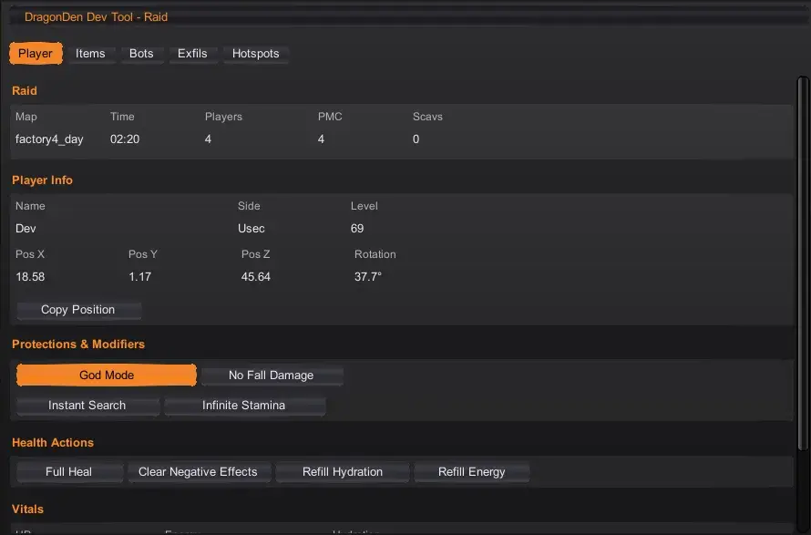
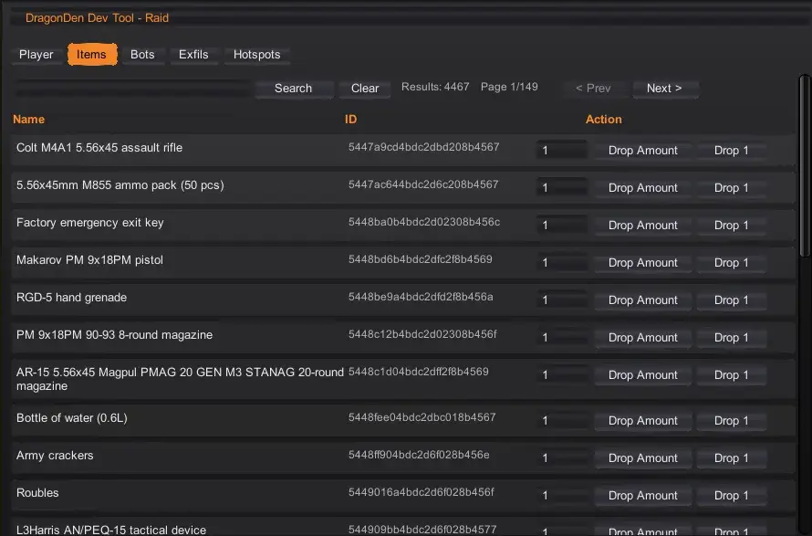
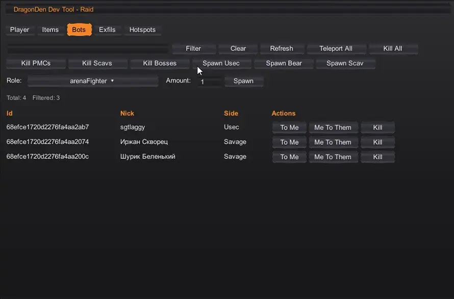
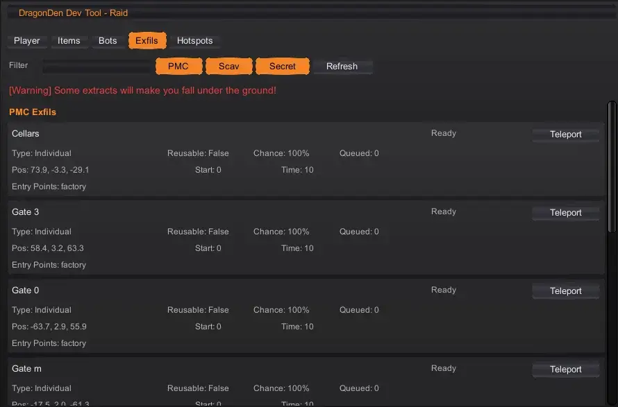
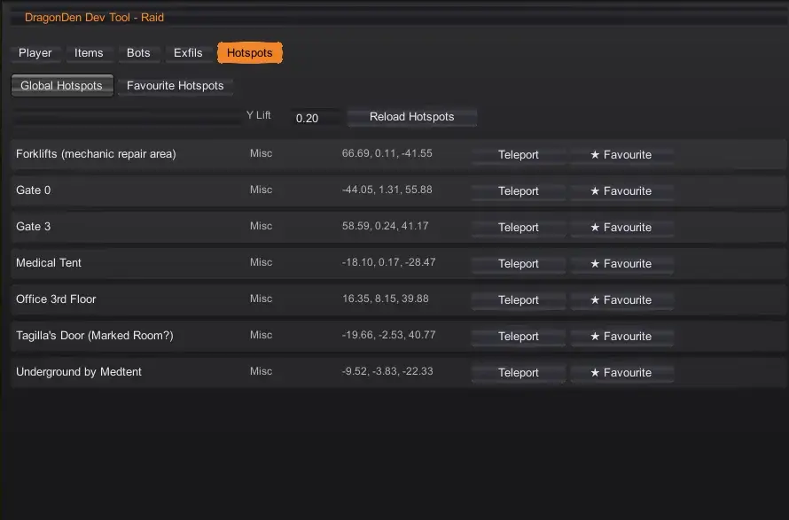
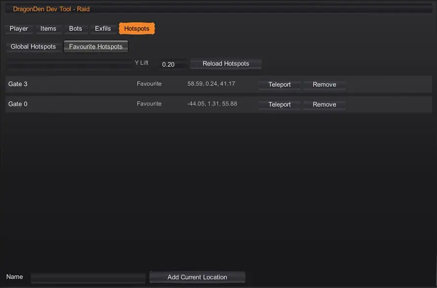

Dragon Den - Dev Tool
- Downloads
- 10,353
- Favourites
- 14
- Mod lists
- 12
What it is
An in-raid dev tool for development testing and messing around. Full Heal, Hydrate, Eat, toggle god mode, Clear bad debuffs like pain, tremor and such, spawn items, manage bots, teleport to extracts, and teleport to about 225 hotspots across all of THE CITY.
Tabs
Player, Items, Bots, Exfils, Hotspots. Hotspot Maker appears when Debug Mode is on in BepInEx settings.
Features
-
Player See raid info and player stats. Copy position. Toggle God Mode, No Fall Damage, Instant Search, Infinite Stamina. Full Heal and clear negative effects. Refill Energy and Hydration.
-
Items Search by name or tpl id. Drop 1 spawns the item. Drop Amount uses stack size and auto splits.
-
Bots Filter by id, nickname, or side. Teleport a bot to you or you to it. Kill one or all. Quick actions for PMCs, Scavs, and Bosses. Spawn bots with an amount.
-
Exfils Filter by group or name. View status, type, chance, timers, position, tips. Teleport to an extract with a small Y offset.
-
Hotspots Global and Favourite lists. Teleport, add to favourites, remove, and reload from JSON files.
-
Hotspot Maker Debug-only. Fetch position, test teleport, add more hotspots to the global hotspots JSON, open the plugin folder.
-
BepInEx Settings Open Dev Tool Window, update interval for player and bots tab, Debug Mode for Hotspot Maker and extra logging.
How to Open Enter a raid. Press Insert (by default) to show or hide the window. Press ESC to hide.
For more information check the Wiki Page Here
Unpack the zip and drop the user folder into your SPTarkov root.
(Use 7Zip Here)
Install demo video credit to Drakia:







- Should not have any conflicts, though it is not tested with FIKA.
- Teleporting to some extracts can place you under terrain or out of bounds. Teleport again or use a hotspot with a higher Y offset.
- Large bot spawns can fail or take time depending on map and navmesh.
- Drakia for the install video
Dragon Den is my twist on THE CITY. It is where cuteness, edgyness, and weirdness collide while staying believable.
- Traders with their own quirks and attitude
- Custom items and quests that feel fresh
- Backpacks, armor, facewear and headwear with personality
- Odd creations that should not exist but still fit right in
No weapons, just everything else that makes THE CITY less boring.
Want to reach me? Look for #drexiras-dragon-den in Welcome To THE CITY’s Discord